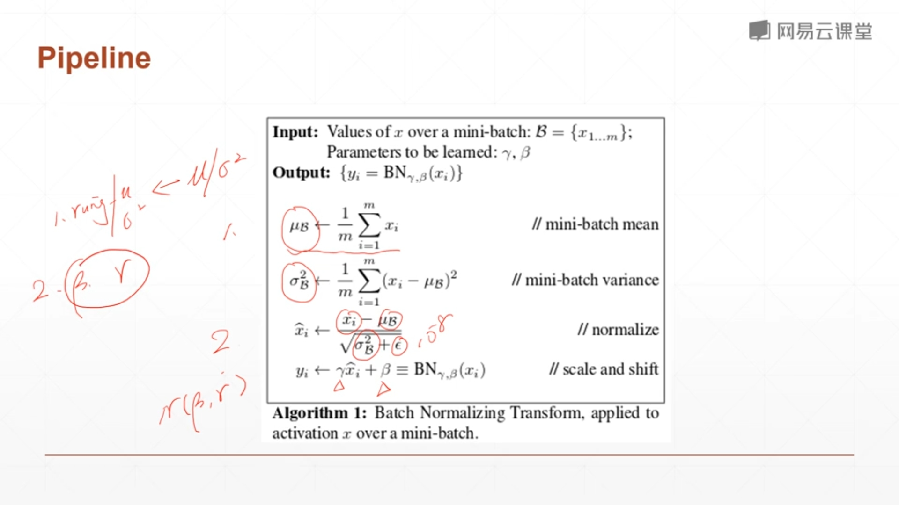
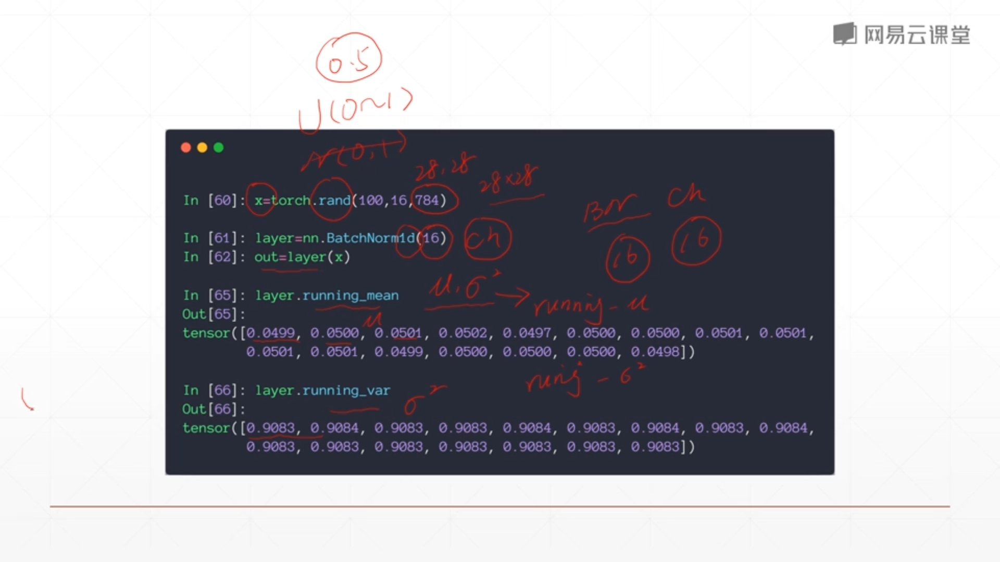
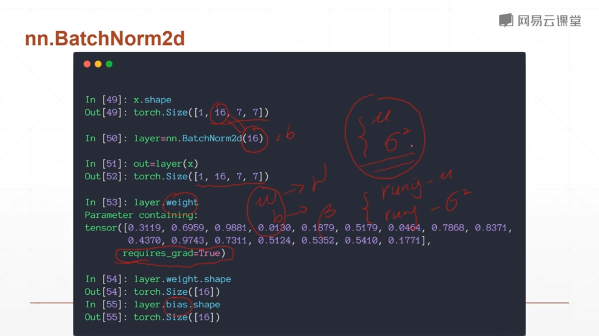
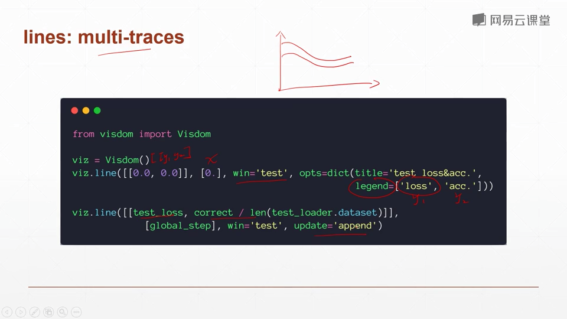
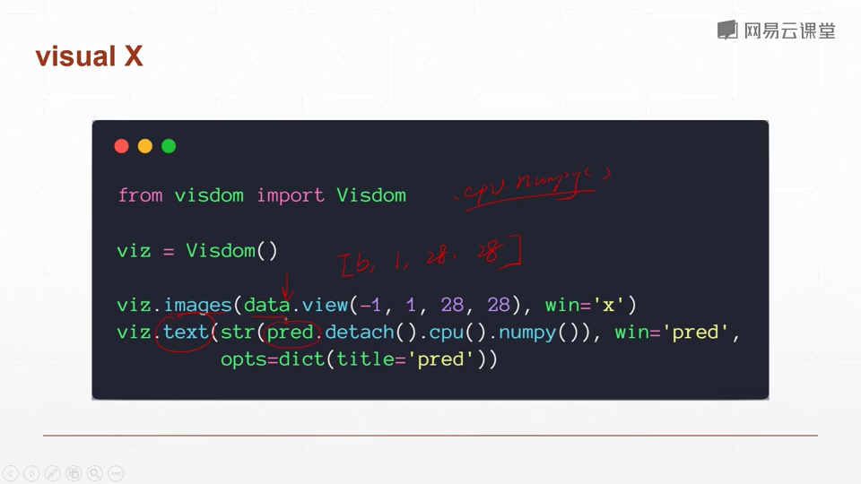

pytorch资料汇总
本文最后更新于：19 小时前
资料汇总
- [[深度学习框架] PyTorch 常用代码段总结 _ 极市高质量视觉算法开发者社区 (2020-05-04 ).html](contents[深度学习框架] PyTorch 常用代码段总结 _ 极市高质量视觉算法开发者社区 (2020-05-04 ).html)
- PyTorch的入门与实战（七月在线，褚老师）
- 深度学习与PyTorch入门实战教程（人工智能101学院，龙良曲）
- [PyTorch 模型训练实用教程.pdf](contents\PyTorch 模型训练实用教程.pdf) （很全面）
一些常识
构建tensor
torch.rand(5,3)
torch.zeros(5,3,dtype=torch.long)
与np不太一样
或torch.zeros(5,3).long()从已有数据构建tensor，会使用原有tensor的特征 x = torch.tensor([5.5,3])
x.new_ones(5,3)
torch.randn_like(x,dtype=torch.float)
x.shape 、x.size() 返回x的大小
==in-place运算==（以_结尾）,会直接改变变量
reshape一个tensor: x.view()
将一个元素的tensor变成数值,x.item()
tensor与array的相互转换
b = a.numpy() <–> a = torch.from_numpy(b) 此处a,b共享内存
加法：a = a+1 和 np.add(a,1,out=a)不同，前者分配了新内存空间，后者直接改变
CUDA
- if torch.cuda.is_available():
device = torch.device("cuda") y = torch.ones_like(x, device=device) x = x.to(device) z=x+y z.to("cpu", torch.double)
- if torch.cuda.is_available():
GPU上的tensor不能直接转numpy，y.to(“cpu”).data.numpy() 或y.cpu().data.numpy()
- 也可使用.cuda()
数据增强
[PyTorch 学习笔记（三）：transforms的二十二个方法_人工智能_TensorSense的博客-CSDN博客 (2020-05-06 ).html](contents\PyTorch 学习笔记（三）：transforms的二十二个方法_人工智能_TensorSense的博客-CSDN博客 (2020-05-06 ).html)
自定义数据集的读取
[PyTorch 学习笔记（一）：让PyTorch读取你的数据集 - 知乎 (2020-05-06 ).html](contents\PyTorch 学习笔记（一）：让PyTorch读取你的数据集 - 知乎 (2020-05-06 ).html)
[PyTorch 中自定义数据集的读取方法小结-PyTorch 中文网 (2020-05-06 ).html](contents\PyTorch 中自定义数据集的读取方法小结-PyTorch 中文网 (2020-05-06 ).html)
划分训练集和测试集

自定义Module类
[[深度学习框架] PyTorch 常用代码段总结 _ 极市高质量视觉算法开发者社区 (2020-05-04 ).html](contents[深度学习框架] PyTorch 常用代码段总结 _ 极市高质量视觉算法开发者社区 (2020-05-04 ).html)
Module类中的forward方法
模型的保存与加载
[Pytorch 保存模型与加载模型 - 知乎 (2020-05-06 ).html](contents\Pytorch 保存模型与加载模型 - 知乎 (2020-05-06 ).html)
[[深度学习框架] PyTorch 常用代码段总结 _ 极市高质量视觉算法开发者社区 (2020-05-04 ).html](contents[深度学习框架] PyTorch 常用代码段总结 _ 极市高质量视觉算法开发者社区 (2020-05-04 ).html)
parameters()和state_dict()的区别
pytorch 加载模型
仅加载重合部分
预训练模型有Module，目前的没有
目前模型比预训练模型多了一些层
权重初始化:
pytorch中的各种参数层（Linear、Conv2d、BatchNorm等）在
__init__方法中定义后（==在__init__中添加self._initialize_weights()，相当于类初始化时运行了该方法==），不需要手动初始化就可以直接使用，这是因为Pytorch对这些层都会进行默认初始化基于Xavier algorithm的参数初始化代码：
1
2
3
4
5
6
7
8
9
10
11
12
13
14def _initialize_weights(self):
for m in self.modules():
if isinstance(m, nn.Conv2d):
n = m.kernel_size[0] * m.kernel_size[1] * m.out_channels
m.weight.data.normal_(0, math.sqrt(2. / n))
if m.bias is not None:
m.bias.data.zero_()
elif isinstance(m, nn.BatchNorm2d):
m.weight.data.fill_(1)
m.bias.data.zero_()
elif isinstance(m, nn.Linear):
m.weight.data.normal_(0, 0.01)
m.bias.data.zero_()
优化器选择
[pytorch中使用torch.optim优化神经网络以及优化器的选择 - pytorch中文网 (2020-05-06 ).html](contents\pytorch中使用torch.optim优化神经网络以及优化器的选择 - pytorch中文网 (2020-05-06 ).html)
- momentum，动量因子，计算本次梯度时结合上一次梯度的方向，相当于惯性，可以避免陷入局部最小值
- Adam 优化器会自动计算momentum，因此设置时没有这个参数
- 正则化
- 能够降低网络复杂度，没有过拟合时不应该加，会降低网络的表达能力
- 二范数：在torch的优化器中设置weight_decay参数即可

- 一范数：torch中暂无API实现
学习率调整策略
[PyTorch 学习笔记（八）：PyTorch的六个学习率调整方法 - 知乎 (2020-05-06 ).html](contents\PyTorch 学习笔记（八）：PyTorch的六个学习率调整方法 - 知乎 (2020-05-06 ).html)
Pytorch提供了六种学习率调整方法，可分为三大类，分别是
有序调整；
自适应调整；
自定义调整。
第一类，依一定规律有序进行调整，这一类是最常用的，分别是等间隔下降(Step)，按需设定下降间隔(MultiStep)，指数下降(Exponential)和CosineAnnealing。这四种方法的调整时机都是人为可控的，也是训练时常用到的。
第二类，依训练状况伺机调整，这就是ReduceLROnPlateau方法。该法通过监测某一指标的变化情况，当该指标不再怎么变化的时候，就是调整学习率的时机，因而属于自适应的调整。
第三类，自定义调整，Lambda。Lambda方法提供的调整策略十分灵活，我们可以为不同的层设定不同的学习率调整方法，这在fine-tune中十分有用，我们不仅可为不同的层设定不同的学习率，还可以为其设定不同的学习率调整策略。
BN层的使用
BN 原理
实际使用时，BN层更新的是$\beta$和$\gamma$，而不是均值和方差

torch中BN层

- BN层的running_mean和running_var的更新是在forward()中进行的，想不更新需要net.eval()
- 最后一步也称之为仿射(affine)，引入这一步的目的主要是设计一个通道，使得输出output至少能够回到输入input的状态（当$\gamma=1,\beta=0$时）使得BN的引入至少不至于降低模型的表现，这是深度网络设计的一个套路
- 如果
affine=False则γ=1,β=0\gamma=1,\beta=0γ=1,β=0，并且不能学习被更新。一般都会设置成affine=True track_running_stats=True表示跟踪整个训练过程中的batch的统计特性，得到方差和均值，而不只是仅仅依赖与当前输入的batch的统计特性。相反的，如果track_running_stats=False那么就只是计算当前输入的batch的统计特性中的均值和方差了。当在推理阶段的时候，如果track_running_stats=False，此时如果batch_size比较小，那么其统计特性就会和全局统计特性有着较大偏差，可能导致糟糕的效果。
1 | |
权重初始化
1 | |
固定随机数种子
https://www.jianshu.com/p/1b9e18146045
1 | |
pytorch模型转换到onnx
https://blog.csdn.net/zxgmlcj/article/details/103279846
https://microsoft.github.io/onnxruntime/python/tutorial.html
可视化
tensorboad（待续）
visdom
安装：
- pip install visdom
- 或者从source安装，据说能避免一些莫名错误(进入visdom-master目录后运行pip install -e)
使用：
命令行输入 python -m visdom.server
按提示打开网页 http://localhost:8097
添加下列代码
一条曲线

多条曲线
图片和文本

visdom代码块
1 | |
参数统计
torchsummary统计参数
1 | |
pytorch-opcounter 计算flops
1 | |
实战：手撕两层感知机
numpy实现
1 | |
torch实现(见html)
torch + 优化器实现(见html)
自定义nn.Modules 实现
1 | |
实战：简单的CNN网络（验证集）
第五课CNN-Image-Classification.html
定义训练集
1 | |
定义验证集
1 | |
训练+验证
1 | |
==调用voc0712.py计算指标：==
1.准备好voc0712.py和voc_eval.py两个文件
2.将测试数据按照VOC数据集格式放好
— VOC2007 此处文件夹年份数字与对应下边
— Annotations 此处放所有标注文件
— ImageSets
—Main
— test.txt txt中格式为 文件名(无后缀)+难例标识（0或1），如：base_0001 1
— train.txt
— JPEGImages 此处放所有图片文件
3.导入数据
1 | |
- 修改VOCroot为自己的路径，如
VOCroot = '/home/usr/VOC/VOCdevkit'，该路径下含有步骤1所列的VOC2007文件夹。年份2007和txt文件名test改为自己的文件夹年份（意思是你也可以命名成VOC2010等，但要命名成VOC+数字，不然还需修改其他代码）和Main中的txt文件名。AnnotationTransform是voc0712.py中的一个类，用于读取voc格式的xml标注文件 - VOCDetection是一个类，testset是该类的一个实例
- ==保证 VOCroot/annotations_cache/annots.pkl是正确的，不能确定就删掉，否则voc_eval读取时报错。==
4.执行检测
1 | |
1 | |
先看_write_voc_results_file方法
VOC_CLASSES 写在voc0712.py的开头，定义了要计算的类别
`VOC_CLASSES = (‘background‘, # always index 0
'person')`_get_voc_results_file_template 方法中定义了==记录结果==的txt文件路径filename，filename中的{:s}是会被赋给类别名的。self.root即步骤1中的VOCroot，这里filedir体现了为什么文件夹要命名成VOC+数字

self.ids 在类初始化时定义，内容为[(VOC2007文件夹路径，测试集图片名),()…]。其中image_sets即步骤2中定义的[(‘2007’,’test’)]，读取了test.txt中的内容，也说明test.txt中内容应是测试集图片+空格+难例标识。 这里rootpath体现了为什么文件夹要命名成VOC+数字。

index = index[1] 即VOC2007文件夹路径，im_ind即测试图片的序号。同时验证了步骤2中evaluate_detections 的方法说明，输入的参数all_boxes格式是
all_boxes[class][image] = [] or np.array of shape #dets x 5，该参数由其他检测代码段中得出，顺序与图片顺序需对应。最后写入==记录结果==的txt中，格式为图片 置信度 xmin ymin xmax ymax
1 | |
然后是_do_python_eval方法
- 这里rootpath体现了为什么文件夹要命名成VOC+数字
- self.image_set 为步骤2中的第二个参数 [(‘2007’,’test’)]
- 文件夹的年份在2010之前和之后会使用两种ap计算方法
- filename = ==记录结果==的txt文件
- voc_eval 计算了recall,prec,ap，并将每一类的结果保存成pkl文件，保存路径output_dir是输入参数
- 将ap保存成列表，计算map并打印出来
- 定义了一个annotations_cache文件，并传入voc_eval
1 | |
5.其他实现细节
voc_eval函数 voc_eval.py文件内容
输入参数
detpath ：==保存结果==的txt，每一类都是单独的一个txt，同理计算每一类都会调用voc_eval函数
annopath = os.path.join(rootpath,’Annotation’,’{:s}.xml’)，缺省文件名的xml路径
imagesetfile：Main中的test.txt
会加载cachedir = os.path.join(self.root, ‘annotations_cache’) 中的annots.pkl文件。如无此文件，则按test.txt中的图片顺序读取xml文件，其中parse_rec的作用是解析xml文件,返回含有多个字典的列表。然后再以test.txt中的测试图片名为key存在recs字典中。


按test.txt中的图片顺序读取recs中每张图片的objects列表，取出其中所有’name’是当前类别的字典，存在R中。取出R中所有字典的‘bbox’的键值存在bbox中，取出R中所有字典的‘difficult’的键值存在difficult中。npos变量统计所有图片中非difficult的object个数。det是一个长为len(objects)的布尔列表，值全为false。将bbox,difficult,det按以图片名为key转存在class_recs字典中。
相当于把读取annots.pkl文件（或者直接解析xml文件）的结果存在recs字典中，在提取当前类别的结果存在class_recs中，都是按一张图片一张图片存的
读取==保存结果==的txt文件，image_ids存图片名，confindence存置信度，BB存目标框，都是np.array，顺序与txt一致。三个array均按照confidence排序

按排序好的顺序依次读取预测框，用R承接class_recs字典中对应图片的键值，将该图片中的所有标注框’bbox’存在BBGT中。 和相应图片中的所有标注框做iou，计算TP和FP，’det’中的布尔列表在这里用于标志 相应序号的标注框是否已经被匹配。fp,tp在相应预测框序号处置1，再用np.cumsum()可实现按置信度顺序得到累加的fp和tp。
np.finfo(np.float64).eps 的意思是取得float64类型中非负的最小值 防止除0报错
1
2
3
4
5
6
7
8
9
10
11
12
13
14
15
16
17
18
19
20
21
22
23
24
25
26
27
28
29
30
31
32
33
34
35
36
37
38
39
40
41
42
43
44
45
46
47
48
49
50
51
52
53
54
55
56
57
58
59
60
61
62
63
64
65
66
67
68
69
70
71
72
73
74
75
76
77
78
79
80
81
82
83
84
85
86
87
88
89
90
91
92
93
94
95
96
97
98
99
100
101
102
103
104
105
106
107
108
109
110
111
112
113
114
115
116
117
118
119
120
121
122
123
124
125
126
127
128
129
130
131
132
133
134
135
136
137
138
139
140
141
142
143
144def voc_eval(detpath,
annopath,
imagesetfile,
classname,
cachedir,
ovthresh=0.5,
use_07_metric=False):
"""rec, prec, ap = voc_eval(detpath,
annopath,
imagesetfile,
classname,
[ovthresh],
[use_07_metric])
Top level function that does the PASCAL VOC evaluation.
detpath: Path to detections
detpath.format(classname) should produce the detection results file.
annopath: Path to annotations
annopath.format(imagename) should be the xml annotations file.
imagesetfile: Text file containing the list of images, one image per line.
classname: Category name (duh)
cachedir: Directory for caching the annotations
[ovthresh]: Overlap threshold (default = 0.5)
[use_07_metric]: Whether to use VOC07's 11 point AP computation
(default False)
"""
# assumes detections are in detpath.format(classname)
# assumes annotations are in annopath.format(imagename)
# assumes imagesetfile is a text file with each line an image name
# cachedir caches the annotations in a pickle file
# first load gt
if not os.path.isdir(cachedir):
os.mkdir(cachedir)
cachefile = os.path.join(cachedir, 'annots.pkl')
# read list of images
with open(imagesetfile, 'r') as f:
lines = f.readlines()
#imagenames = [x.strip() for x in lines]
imagenames = []
for line in lines:
img_id, value = line.split()
if value != '1':
continue
imagenames.append(img_id)
if not os.path.isfile(cachefile):
# load annots
recs = {}
for i, imagename in enumerate(imagenames):
recs[imagename] = parse_rec(annopath.format(imagename))
if i % 100 == 0:
print('Reading annotation for {:d}/{:d}'.format(
i + 1, len(imagenames)))
# save
print('Saving cached annotations to {:s}'.format(cachefile))
with open(cachefile, 'wb') as f:
pickle.dump(recs, f)
else:
# load
with open(cachefile, 'rb') as f:
recs = pickle.load(f)
# extract gt objects for this class
class_recs = {}
npos = 0
for imagename in imagenames:
R = [obj for obj in recs[imagename] if obj['name'] == classname]
bbox = np.array([x['bbox'] for x in R])
difficult = np.array([x['difficult'] for x in R]).astype(np.bool)
det = [False] * len(R)
npos = npos + sum(~difficult)
class_recs[imagename] = {'bbox': bbox,
'difficult': difficult,
'det': det}
# read dets
detfile = detpath.format(classname)
with open(detfile, 'r') as f:
lines = f.readlines()
splitlines = [x.strip().split(' ') for x in lines]
image_ids = [x[0] for x in splitlines]
confidence = np.array([float(x[1]) for x in splitlines])
BB = np.array([[float(z) for z in x[2:]] for x in splitlines])
# sort by confidence
sorted_ind = np.argsort(-confidence)
sorted_scores = np.sort(-confidence)
BB = BB[sorted_ind, :]
image_ids = [image_ids[x] for x in sorted_ind]
# go down dets and mark TPs and FPs
nd = len(image_ids)
tp = np.zeros(nd)
fp = np.zeros(nd)
for d in range(nd):
R = class_recs[image_ids[d]]
bb = BB[d, :].astype(float)
ovmax = -np.inf
BBGT = R['bbox'].astype(float)
if BBGT.size > 0:
# compute overlaps
# intersection
ixmin = np.maximum(BBGT[:, 0], bb[0])
iymin = np.maximum(BBGT[:, 1], bb[1])
ixmax = np.minimum(BBGT[:, 2], bb[2])
iymax = np.minimum(BBGT[:, 3], bb[3])
iw = np.maximum(ixmax - ixmin + 1., 0.)
ih = np.maximum(iymax - iymin + 1., 0.)
inters = iw * ih
# union
uni = ((bb[2] - bb[0] + 1.) * (bb[3] - bb[1] + 1.) +
(BBGT[:, 2] - BBGT[:, 0] + 1.) *
(BBGT[:, 3] - BBGT[:, 1] + 1.) - inters)
overlaps = inters / uni
ovmax = np.max(overlaps)
jmax = np.argmax(overlaps)
if ovmax > ovthresh:
if not R['difficult'][jmax]:
if not R['det'][jmax]:
tp[d] = 1.
R['det'][jmax] = 1
else:
fp[d] = 1.
else:
fp[d] = 1.
# compute precision recall
fp = np.cumsum(fp)
tp = np.cumsum(tp)
rec = tp / float(npos)
# avoid divide by zero in case the first detection matches a difficult
# ground truth
prec = tp / np.maximum(tp + fp, np.finfo(np.float64).eps)
ap = voc_ap(rec, prec, use_07_metric)
return rec, prec, ap
voc_ap函数 voc_eval.py文件内容
输入按置信度顺序累加的 rec和prec，只看07年之后的计算方法，可以发现是类似积分的方法，先计算出rec变化的位置，其实就是rec的步长，然后乘以prec
1
2
3
4
5
6
7
8
9
10
11
12
13
14
15
16# correct AP calculation
# first append sentinel values at the end
mrec = np.concatenate(([0.], rec, [1.]))
mpre = np.concatenate(([0.], prec, [0.]))
# compute the precision envelope
for i in range(mpre.size - 1, 0, -1):
mpre[i - 1] = np.maximum(mpre[i - 1], mpre[i])
# to calculate area under PR curve, look for points
# where X axis (recall) changes value
i = np.where(mrec[1:] != mrec[:-1])[0]
# and sum (\Delta recall) * prec
ap = np.sum((mrec[i + 1] - mrec[i]) * mpre[i + 1])
all_boxes的格式
all_boxes[class][image] = [] or np.array of shape #dets x 5
1
2
3
4
5
6
7
8
9
10
11
12
13
14
15num_images = len(testset)
num_classes = 2
all_boxes = [[[] for _ in range(num_images)]
for _ in range(num_classes)]
for i in tqdm(range(num_images)):
img = testset.pull_image(i)
# 省略检测过程...
for j in range(1, num_classes):
inds = np.where(scores[:, j] > thresh)[0]
if len(inds) == 0:
all_boxes[j][i] = np.empty([0, 5], dtype=np.float32)
continue
#省略NMS与维度变换...
all_boxes[j][i] = c_dets
==踩坑==
BN层参数问题
torch0.4.1后，BN层3个参数，running_mean,running_var,num_batches_tracked
如果是模型参数（Orderdict格式，很容易修改）里少了num_batches_tracked变量，就加上去，如果是多了就删掉。偷懒的做法是将load_state_dict的strict参数置为False，如下所示：
1 | |
torch中 .modules()与.children()的区别
children()与modules()都是返回网络模型里的组成元素，但是children()返回的是最外层的元素，modules()返回的是所有的元素，包括不同级别的子元素。
modules()中重复的modules 只返回一次，是模块级的而不是torch.nn里基础的层

torchvision.transforms.ToTensor():
‘’’ Converts a PIL Image or numpy.ndarray (H x W x C) in the range [0, 255] to a torch.FloatTensor of shape (C x H x W) in the range [0.0, 1.0]. ‘’’
onehot
在PyTorch中使用交叉熵损失函数的时候会自动把label转化成onehot，所以不用手动转化，而使用MSE需要手动转化成onehot编码。
nn类与F方法的区别
nn.CrossEntropyLoss()(output, target) 类要先加（）再加参数
F.nll_loss(output, target) 方法不需要
Dataloader长度
len(Dataloader.dataset) ==总的图片个数== ， len(Dataloader) ==batch的个数==
只安装torchvision
pip install --no-deps torchvision==0.4.0